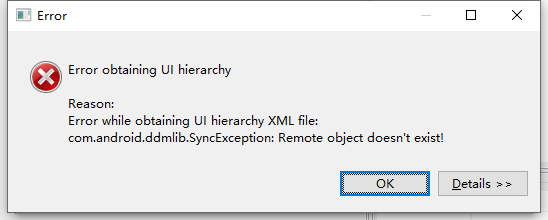

UI Automator Viewer无法获取到当前布局元素的原因
近期在测试过程中需要获取到界面上的某些按钮的resource ID去在代码中定位到对应的点击响应函数，官方SDK中自带的UI Automator Viewer（简写成UIAV好了）可以满足这个需求，但是使用的过程中发现部分应用会没办法导出布局，因此有了这篇博客来看下是什么原因。
问题描述
UIAV无法获取到当前屏幕的布局，显示的错误如下：

上网冲浪查找这个错误相关的信息和解决方法，包括开启USB调试，重新启动adb server，手动获取布局文件和截图等，都没啥用。
问题原因
在尝试手动获取到布局文件和屏幕截图再分别导入到UIAV的时候，突然发现获取到的屏幕截图的大小为0kb，另外的uix布局文件倒是看起来很正常，那么结合到当前的使用场景就很容易想到可能是当前的窗口禁止了屏幕截图类的操作，导致UIAV无法获取到屏幕截图从而报错。
根本原因是Android 4.2（API Level 17）中引入的窗口保护机制，如果添加了FLAG_SECURE那么该窗口禁止截图或者屏幕录制的时候为黑屏。
解决方法
还是需要使用到屏幕截图功能，不然在布局文件里面去找太麻烦了，搜了一下Xposed和Magisk都有可以把FLAG_SECURE禁用的模块，这里使用在Magisk上的模块Smali Pather。禁用FLAG_SECURE只是他的一个小小功能，使用起来也非常方便，一键下载依赖+patch（这个不是现成的模块，需要根据framework的文件去生成模块），并且这个模块的作者也一直在维护。
最后刷上模块发现可以在一些原来禁止截图的页面上截图了，UIAV也可以正常使用。
参考资料
本博客所有文章除特别声明外，均采用 CC BY-NC-SA 4.0 许可协议。转载请注明来自 Exp！